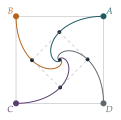

STEP III 1988, 문제 10
계속 읽기 전에 문제를 먼저 읽어 보자. 문제는 STEP Support Programme의 문제 데이터베이스에 있다: step.maths.org/questions/88-s3-q10
도입
정사각형 모양 들판의 네 꼭짓점에 개 네 마리가 서 있다. 각 개는 자기 왼쪽에 있는 개를 쫓아간다. 개들은 어디에서 만나고, 만나기까지 시간은 얼마나 걸리며, 어떤 경로를 따라갈까? 그 경로는 중심 둘레를 무한히 많이 감아 도는 아름다운 나선이다. 그런데도 각 개가 달리는 거리는 유한하며, 정확히 정사각형 한 변의 길이와 같다.
이것은 추적 문제(pursuit problem)로, 1732년 피에르 부게(Pierre Bouguer)가 해적선을 쫓는 배를 두고 처음 연구한 유형의 문제이다. 이 문제를 풀 수 있게 해 주는 비결은 대칭(symmetry)이다. 한 마리의 개에게 일어나는 일은 모든 개에게 똑같이 일어나므로, 네 마리 개는 언제나 정사각형을 이룬다. 이 점만 알아차리면 미분방정식(differential equation)은 거의 저절로 세워진다.
시작하기 전에
대칭성에 따르면, 네 마리 개는 매 순간 어떤 도형을 이루는가? 그 도형의 중심은 어디인가?
이 상황은 정사각형의 중심에 대한 4분의 1 회전(\(A \to B \to C \to D \to A\)로 옮기는 회전)으로 바뀌지 않으므로, 개들은 항상 같은 중심 \(O\)를 갖는 정사각형을 이룬다. 정사각형은 회전하면서 줄어들지만 계속 정사각형으로 남는다. 특히 \(A\)와 \(B\)는 항상 \(O\)로부터 같은 거리 \(r\)에 있고, \(OB\)는 항상 \(OA\)보다 4분의 1 회전만큼 앞서 있다.
차근차근 풀기
단계 1 운동 방향
\(A\)는 \(B\)를 향해 달린다. 삼각형 \(OAB\)에서 \(AB\)가 \(AO\)(중심을 향하는 방향)와 이루는 각은 얼마인가?
삼각형 \(OAB\)는 \(OA = OB\)이고 \(O\)에서의 각이 직각이므로, 나머지 두 각은 \(45^\circ\)이다. 따라서 크기가 \(v\)인 \(A\)의 속도는 중심을 향하는 동경 방향과 \(45^\circ\)를 이루며, \(B\) 쪽으로, 즉 \(\theta\)가 증가하는 방향으로 기울어 있다(\(B\)가 \(A\)로부터 반시계 방향에 있도록 각을 정한 경우).
단계 2 미분방정식
\(A\)의 속도를 동경 성분과 횡 성분으로 나누어 보자. 극좌표(polar coordinates)에서 동경 방향 속도(radial velocity)는 \(\dot r\)이고 횡 방향 속도(transverse velocity)는 \(r\dot\theta\)이다.
(안쪽으로 향하는) 동경 성분은 \(v\cos45^\circ\)이고 횡 성분은 \(v\sin45^\circ\)이므로 \[\dot r = -\frac{v}{\sqrt2}, \qquad r\dot\theta = \frac{v}{\sqrt2}.\] 두 식을 나누면 \(\dfrac{\mathrm{d}r}{\mathrm{d}\theta} = \dfrac{\dot r}{\dot\theta} = -r\)이므로 \(r = \lambda e^{-\theta}\)이다. 여기서 처음에 \(\theta = 0\)이라면 \(\lambda\)는 중심으로부터의 처음 거리이다.■
단계 3 개 \(n\)마리
정\(n\)각형에서 삼각형 \(OAB\)의 \(O\)에서의 각은 얼마인가? \(AB\)가 \(AO\)와 이루는 각은 얼마인가? 2단계를 반복해 보자.
\(O\)에서의 각은 \(\frac{2\pi}{n}\)이므로, 크기가 같은 두 밑각은 \(\frac12\bigl(\pi - \frac{2\pi}{n}\bigr) = \frac\pi2 - \frac\pi n\)이다. 속도는 안쪽을 향하는 반지름과 이 각을 이루므로 \[\dot r = -v\cos\left(\frac\pi2 - \frac\pi n\right) = -v\sin\frac\pi n, \qquad r\dot\theta = v\sin\left(\frac\pi2 - \frac\pi n\right) = v\cos\frac\pi n.\] 따라서 \(\dfrac{\mathrm{d}r}{\mathrm{d}\theta} = -r\tan\dfrac\pi n\)이고, \[r = \lambda e^{-\theta\tan(\pi/n)}. \qed\] \(n = 4\)일 때 \(\tan\frac\pi4 = 1\)이므로 정사각형의 경우가 다시 얻어진다.

돌아보기
대칭은 여러 물체를 하나로 줄여 준다. 배치가 계속 정사각형으로 유지되므로, 서로 영향을 주고받는 네 마리 개가 간단한 규칙을 따르는 하나의 입자로 바뀌었다.
중심 둘레의 운동에는 극좌표를. 속도의 동경 성분과 횡 성분 \(\dot r\)과 \(r\dot\theta\)로부터 곧바로 방정식을 얻었다.
나누어서 시간을 소거하라. 비 \(\dot r/\dot\theta\)를 이용하면 각 점에 언제 도달하는지 몰라도 경로의 모양을 알 수 있었다.
숨은 수학
동경 방향 속력 \(\dot r = -v\sin\frac\pi n\)은 일정하므로, 개들은 시간 \(T = \frac{r_0}{v\sin(\pi/n)}\) 뒤에 중심에 도달하고, 각자 거리 \(vT = \frac{r_0}{\sin(\pi/n)}\)를 달린다. 한 변의 길이가 \(s\)인 정\(n\)각형에서는 \(r_0 = \frac{s}{2\sin(\pi/n)}\)이므로, 각 개가 달리는 거리는 \[\frac{s}{2\sin^2(\pi/n)}.\] 이다. 개가 네 마리일 때 이 값은 정확히 \(s\)이다. 즉 각 개는 정확히 한 변의 길이만큼 달린다. (이것을 깔끔하게 보는 방법이 있다. \(B\)의 속도는 항상 \(AB\)에 수직이므로 거리 \(AB\)를 바꾸지 않는다. 오직 \(AB\)를 따라 곧장 속력 \(v\)로 움직이는 \(A\)의 운동만이 간격을 좁히며, 처음 간격은 \(s\)이다.) 개가 세 마리일 때 거리는 \(\frac23s\)이고, 여섯 마리일 때는 \(2s\)이다. 그런데도 모든 경우에 나선은 중심 둘레를 무한히 많이 감아 도는데, \(r \to 0\)일 때 \(\theta \to \infty\)이기 때문이다. 길이가 유한하면서 무한히 많이 회전하는 곡선은 역설이 아니다. 회전이 충분히 빠르게 작아지기 때문이다.
로그 나선
곡선 \(r = \lambda e^{-k\theta}\)를 로그 나선(logarithmic spiral) 또는 등각 나선(equiangular spiral)이라 한다. 이 곡선은 중심에서 뻗어 나가는 모든 반직선과 같은 각도로 만난다. 모양을 유지하는 성장이 이 곡선을 만들어 내므로, 앵무조개의 껍데기나 일부 은하의 나선팔처럼 자연에서도 나타난다. 야코프 베르누이(Jacob Bernoulli)는 이 곡선에 너무나 매료되어, 자신의 묘비에 Eadem mutata resurgo(“변하여도 나는 같은 모습으로 다시 일어나리라”)라는 문구와 함께 이 곡선을 새겨 달라고 부탁했다. 이 문구는 로그 나선이 어떤 배율에서 보아도 똑같아 보인다는 사실을 가리킨다. 그러나 석공은 그 대신 아르키메데스 나선(Archimedean spiral)을 새겼다.
실제 세계의 추적
항상 목표물을 곧장 향하는 “순수 추적”(pure pursuit)은 미사일이나 포식자에게 가장 단순한 유도 법칙이다. 하지만 최선은 아니다. 목표물이 앞으로 있을 곳을 향하는 방식(“비례 항법”(proportional navigation))이 더 효율적이며, 현대의 미사일과 잠자리, 매 같은 일부 포식자가 실제로 쓰는 방식이 바로 이것이다. 추적과 회피의 수학은 20세기에 미분 게임(differential games)이라는 이름으로 독자적인 분야가 되었다.
사고 기술
계가 대칭적이고 규칙이 그 대칭을 존중한다면, 대칭은 모든 시간 동안 유지되며 계의 한 부분만 따라가면 된다.
이 아이디어는 역학과 동역학의 많은 문제를 해결해 준다. 이는 대칭과 보존 사이의 깊은 관계를 보여 주는 간단한 예이다.
더 도전하기
깔끔한 논증. 개 네 마리 문제에서 거리 \(AB\)가 정확히 비율 \(v\)로 줄어드는 이유를 꼼꼼히 설명하고, 이로부터 개들이 시간 \(s/v\) 뒤에 만난다는 것을 유도하여라.
개 세 마리. 개 세 마리가 한 변의 길이가 \(s\)인 정삼각형의 꼭짓점에서 출발한다. 각 경로의 방정식, 만날 때까지 걸리는 시간, 각 개가 달리는 거리를 구하여라.
몇 바퀴일까? 중심에서 \(100\) m 떨어진 곳에서 출발한 개 네 마리는 한 바퀴를 완전히 돈 뒤 중심에 얼마나 가까워지는가? 몇 바퀴를 완전히 돌아야 중심으로부터 \(1\) mm 이내에 들어오는가?
개 두 마리. \(n = 2\)(서로 마주 보는 개 두 마리)일 때는 어떻게 되는가? 공식이 여전히 의미가 있는가?
더 읽을거리
Paul Nahin, Chases and Escapes: The Mathematics of Pursuit and Evasion (Princeton University Press). 추적과 회피의 수학. 부게에서 미사일까지, 추적 곡선에 관한 모든 것을 다룬다.
Eli Maor, e: The Story of a Number (Princeton University Press). 수 e의 이야기. 로그 나선과 베르누이의 묘비 이야기가 실려 있다.
D’Arcy Thompson, On Growth and Form (Cambridge University Press). 성장과 형태에 관하여. 나선 성장을 포함하여 자연 속의 수학을 다룬 고전이다.